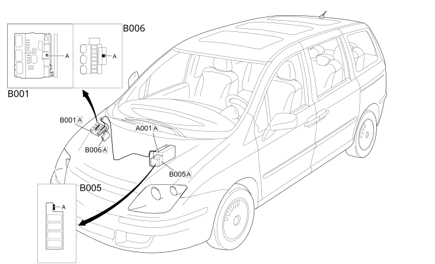

41 BATTERY POSITIVE
- Path
- Electrical equipment > 2 WIRING > 41 BATTERY POSITIVE
- Kind
- wiring harness
- Applies to
- engines: 2.0 16V JTD, 2.2 16V JTD; all production periods; only with equipment: MY 2005
- Interactive page
- https://sloeber94.github.io/elrnDB-fUlss/en/#/179009555
Applies to: engines: 2.0 16V JTD, 2.2 16V JTD; all production periods; only with equipment: MY 2005
